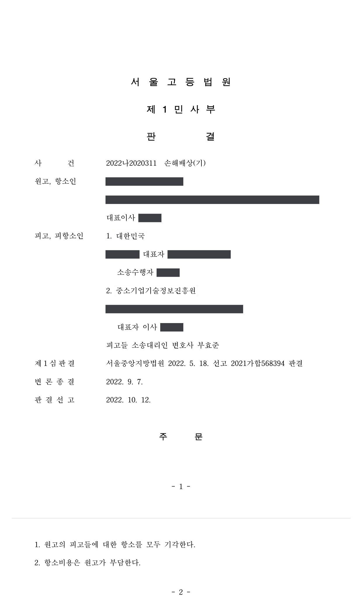

국가연구개발사업 과제 선정 탈락을 이유로 한 손해배상 청구소송 (1·2심)
서울중앙지방법원 2021가합568394 · 서울고등법원 2022나2020311 · 담당변호사 부효준
판결문


사건의 요지
창업성장기술개발사업 신청 과제가 서면평가에서 추천 제외된 것을 두고 국가와 전문기관을 상대로 제기된 손해배상 청구에서, 평가 절차의 위법 여부와 손해의 인정 여부가 다투어진 사건입니다.
사건의 주요 내용
물류관리 프로그램을 개발·판매하는 원고 회사는 2021년 6월 창업성장기술개발사업(제2차 시행계획)의 전문기관에 '자동공급방식 산업자재 거래 서비스플랫폼 개발 및 구매대행 사업화' 과제를 신청하였으나, 2021년 7월 서면평가에서 '추천제외'되었습니다. 원고의 이의신청에 대하여 전문기관은 이의신청평가위원회를 열어 대면 소명을 들은 뒤 2021년 8월 서면평가 결과가 합당하다며 이의신청을 받아들이지 않았습니다.
원고는 평가기준과 평가위원 구성에 중대한 절차적 위법이 있다며, 주위적으로 국가(전문기관에 공무를 위탁한 주체라는 주장)를, 예비적으로 전문기관을 상대로 3년간의 교통비 1,149,000원과 대표이사에게 지급한 급여 중 70%에 해당하는 70,350,000원, 위자료 1억 원 등 합계 171,499,000원의 손해배상을 청구하였습니다. 부효준 변호사는 피고인 국가와 전문기관을 함께 대리하였습니다.
쟁점
- 전문기관이 수행한 과제 평가·선정 업무에 대하여 국가가 국가배상책임을 지는지(전문기관이 국가배상법상 공무원 또는 공무수탁사인에 해당하는지)
- 연구개발과제 서면평가의 평가기준과 평가위원 구성이 재량권을 일탈·남용한 위법한 것인지
- 과제 선정 탈락으로 신청기업이 주장하는 교통비·급여 상당의 손해와 위자료가 평가와 인과관계 있는 손해인지
원고의 주장
- 전문기관의 평가는 원고가 영위하는 산업자재 구매관리 영역에 적합하지 않은 판단기준을 적용한 평가기준 자체의 오류가 있고, 해당 영역을 평가할 전문성이나 능력이 없는 평가위원들로 구성된 평가위원회에서 이루어져 중대한 절차적 위법이 있다고 주장하였습니다.
- 국가는 전문기관에 공무를 위탁하여 법령을 위반하였으므로 국가배상책임을 지고, 국가가 책임을 지지 않는 경우에는 전문기관이 손해배상책임을 진다고 주장하였습니다.
- 항소심에서는 2018년부터 4년간 21회에 걸쳐 제출한 과제 신청이 모두 선정되지 않은 경위를 들어 평가의 위법을 다투었습니다.
부효준 변호사의 주장
- 과제 신청에 대한 평가와 결과 통보의 주체는 중소기업 기술혁신 촉진법 제20조에 따라 설립된 별도 법인인 전문기관이므로, 전문기관을 국가의 기관으로서 국가배상책임의 행위주체인 공무원이라고 볼 수 없고, 평가·선정·과제관리 업무를 국가로부터 위탁받은 것이라고 단정할 수도 없다고 주장하였습니다.
- 지원대상 과제의 선정은 전문기관의 고유한 정책 판단과 고도의 기술적·전문적 판단에 맡겨진 폭넓은 재량 사항이고, 각 분야 전문가로 구성된 서면평가위원회와 이의신청평가위원회가 8개 평가항목별로 구체적으로 평가하였으며 가장 높은 점수와 가장 낮은 점수를 빼고 평점을 내는 장치도 있었으므로 재량권 일탈·남용이 없다고 주장하였습니다.
- 운영요령 제10조·제11조에 따라 평가단은 산업계·학계·연구계 전문가로 이루어진 평가위원 후보단을 활용하여 구성하면 되므로 평가위원 자격에 문제가 없고, 원고가 주장하는 교통비·급여 상당의 손해는 평가와 인과관계가 없다고 다투었습니다.
법원의 판단
1심 법원은 국가에 대한 청구에 관하여, 평가를 진행하고 결과를 통보한 주체는 별도 법인인 전문기관이므로 이를 국가배상책임의 행위주체인 공무원으로 볼 수 없고, 소관 중앙행정기관이 예산을 지원하더라도 평가·선정·과제관리 업무를 국가가 위탁한 것이라고 단정하기 어려우며, 설령 공무를 위탁받은 사인으로 보더라도 평가에 위법성이 없다고 판단하였습니다.
전문기관에 대한 청구에 관하여는, 행정청의 전문적·정성적 평가는 사실인정에 중대한 오류가 있거나 사회통념상 현저하게 타당성을 잃은 특별한 사정이 없는 한 존중되어야 한다는 대법원 법리를 전제로, 전문가 평가위원회의 8개 항목별 평가, 극단적인 점수를 배제하는 평점 산정 방식, 이의신청에 따른 대면심사 등에 비추어 재량권 일탈·남용이 없고, '추천제외'는 사업이 잘못되었다는 것이 아니라 한정된 정부지원금의 지원 기준을 충족하지 못하였다는 것에 불과하다고 보았습니다. 손해와의 인과관계도 인정하지 않아 청구를 모두 받아들이지 않았습니다.
항소심은 1심 판결을 그대로 인용하면서, 운영요령 제10조·제11조에 따라 전문기관은 일정 기준을 충족하는 산업계·학계·연구계 전문가로 이루어진 평가위원 후보단을 활용하여 평가단을 구성하면 족하므로 평가단에 산업자재 구매관리 분야 전문가가 없더라도 그 구성이 위법하다고 보기 어렵다는 점을 덧붙여 2022년 10월 항소를 받아들이지 않았습니다.
행정청의 전문적인 정성적 평가 결과는 판단의 기초가 된 사실인정에 중대한 오류가 있거나 그 판단이 사회통념상 현저하게 타당성을 잃어 객관적으로 불합리하다는 등의 특별한 사정이 없는 한 법원이 당부를 심사하기에 적절하지 않으므로 가급적 존중되어야 하고, 여기에 재량권을 일탈ㆍ남용한 특별한 사정이 있다는 점은 증명책임분배의 일반원칙에 따라 이를 주장하는 자가 증명하여야 한다(대법원 2020. 7. 9. 선고 2017두39785 판결 등 참조).
서울중앙지방법원 2021가합568394 판결 이유 '4. 가. 관련 법리 및 위법성 판단 기준'
이 사건 사업의 경우 피고 전문기관이 중소기업이 제안한 사업의 기술개발의 필요성, 차별성, 기술개발의 목표, 준비, 개발방법, 개발기간 등의 적정성, 사업화 전략의 실현가능성 등에 대한 심사를 통해 정부지원 연구개발비를 지원하는 사업으로서, 어떤 신청과제에 대하여 연구개발비를 지원할지 여부는 원칙적으로 이 사건 사업의 평가주체인 전문기관의 고유한 정책 판단 또는 과제심사 주관자의 자율적 판단에 맡겨진 것인 점, 중소기업의 신기술에 대한 기술성·사업성 분석 및 성공가능성 진단 등은 고도의 기술적, 전문적인 판단을 요구하는 특성을 가지고 있는 점 등의 사정에 비추어 볼 때, 소관 중앙행정기관의 장으로부터 이 사건 사업의 지원대상 과제 선정 등을 담당하는 전문기관으로 지정받은 피고 전문기관은 지원대상 과제 선정에 있어서 폭넓은 재량을 가지고 있다고 할 것이어서 과제심사 방법이나 기준이 헌법이나 법률에 위반되거나 지나치게 합리성이 결여되고 객관적 정당성을 상실한 경우 또는 이 사건 사업의 목적, 관계 법령 등의 취지에 비추어 현저하게 불합리하거나 부당하여 재량권을 일탈 내지 남용하였다고 판단되는 경우가 아닌 한 피고 전문기관의 지원대상 과제 선정과정이 위법하다고 할 수 없다.
서울중앙지방법원 2021가합568394 판결 이유 '4. 가. 관련 법리 및 위법성 판단 기준'
앞서 인정한 사실과 같이 원고의 이 사건 신청에 대한 평가를 진행하여 그 평가결과를 통보한 주체는 피고 전문기관이고, 피고 전문기관은 중소기업기술혁신법 제20조에 따라 설립된 법인이므로, 피고 전문기관을 피고 대한민국의 기관으로서 국가배상책임의 행위주체인 공무원에 해당한다고 볼 수 없다. 나아가, 앞서 든 증거에 의하면, 비록 이 사건 사업에 대하여 소관 중앙행정기관이 예산을 지원한다고 하더라도, 이 사건 사업과 관련된 신청에 대한 평가, 결과 통보, 지원과제 선정, 연구개발비지급, 과제관리 및 사후관리는 모두 지정된 전문기관인 피고 전문기관이 수행하는 것이므로, 피고 전문기관의 이와 같은 업무를 피고 대한민국으로부터 위탁받은 것이라고 단정하기도 어렵다.
서울중앙지방법원 2021가합568394 판결 이유 '3. 주위적 피고 대한민국에 대한 청구에 관한 판단'
※ 판결 이유 가운데 이 사건의 판단 기준이 된 부분을 그대로 옮긴 것으로, 당사자 이름 등은 가렸습니다.
이 사건이 보여 주는 것
연구개발과제 선정 평가는 전문가 위원회의 정성적 판단이므로, 법원은 평가 결과의 옳고 그름을 다시 심사하지 않고 사실인정의 중대한 오류나 현저한 불합리가 있는지만 살피며, 그러한 특별한 사정의 증명책임은 다투는 쪽에 있습니다. 선정에서 탈락한 것이 '사업이 잘못되었다'는 평가는 아니라는 점도 법원이 분명히 하였습니다.
또한 전문기관이 수행하는 평가·선정 업무를 두고 국가를 상대로 국가배상을 청구하는 것은, 전문기관이 법률에 따라 설립된 별도 법인이고 업무 위탁 관계가 인정되지 않는 한 받아들여지기 어렵습니다. 평가에 불만이 있는 신청기업은 이의신청 단계에서 평가의견 항목별로 구체적인 소명자료를 제출하는 것이 손해배상 소송보다 실질적인 대응 방법입니다.
비슷한 처분을 받으셨다면
국가연구개발 제재처분은 사전통지를 받은 날부터 20일 이내에 재검토 요청 의견을 내고, 처분이 있음을 안 날부터 90일 이내에 취소소송을 제기해야 합니다. 처분서나 사전통지서를 받은 날짜부터 확인해 드립니다.